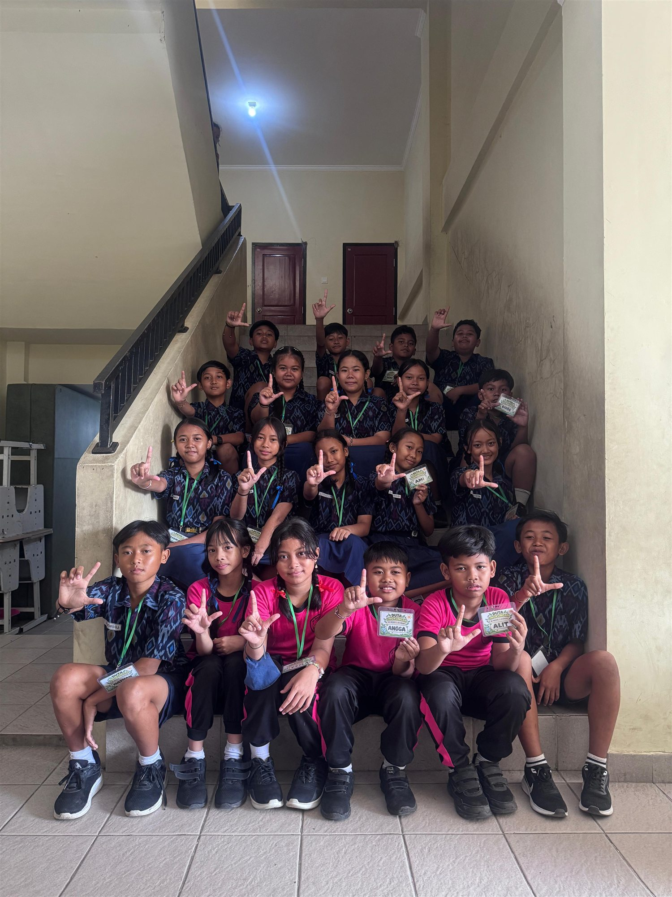
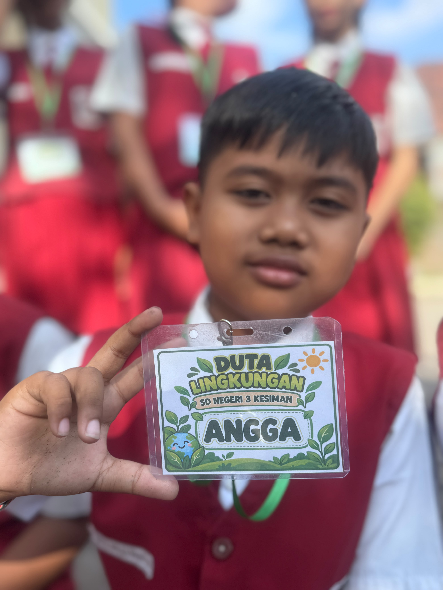
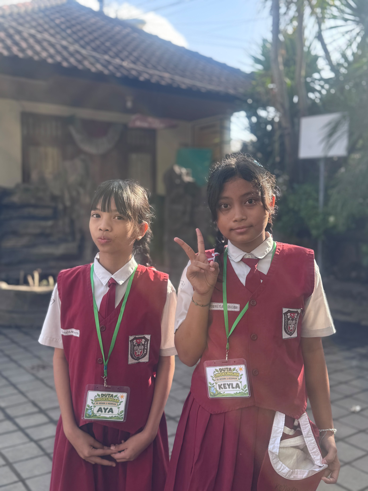
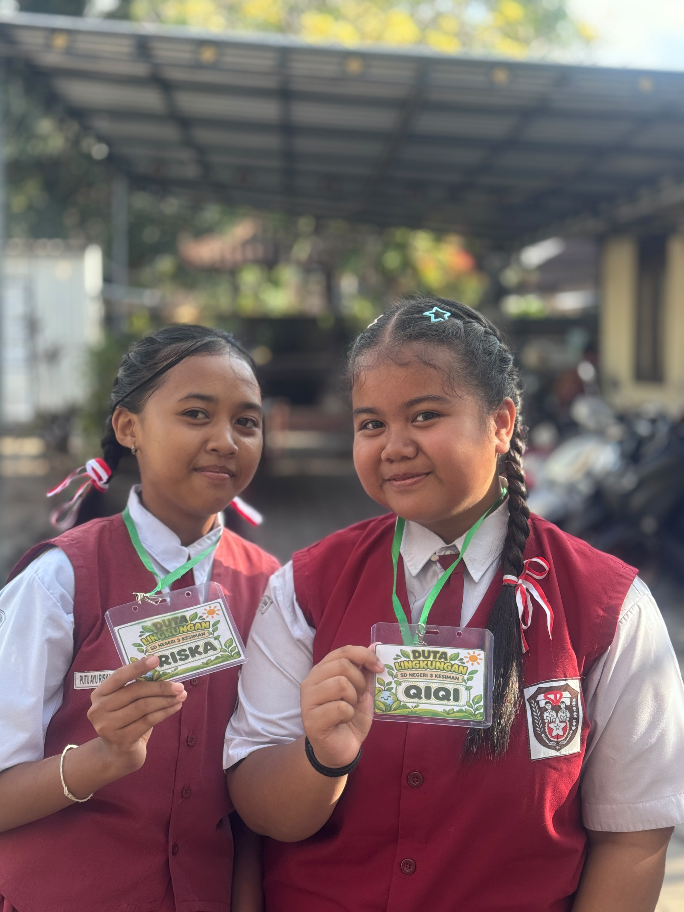
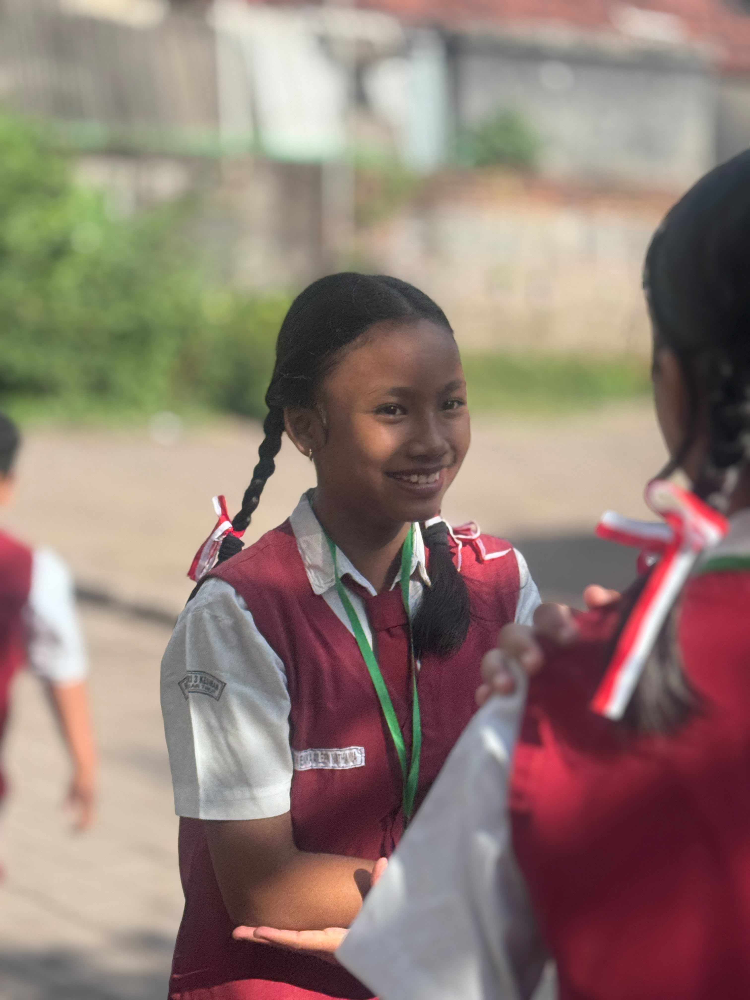
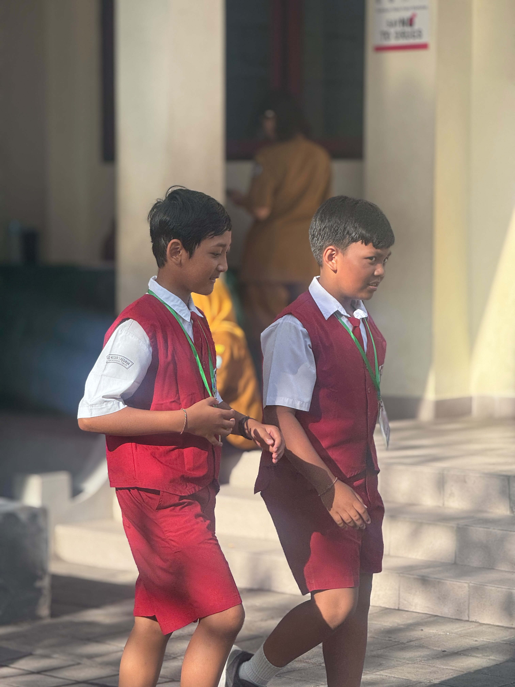
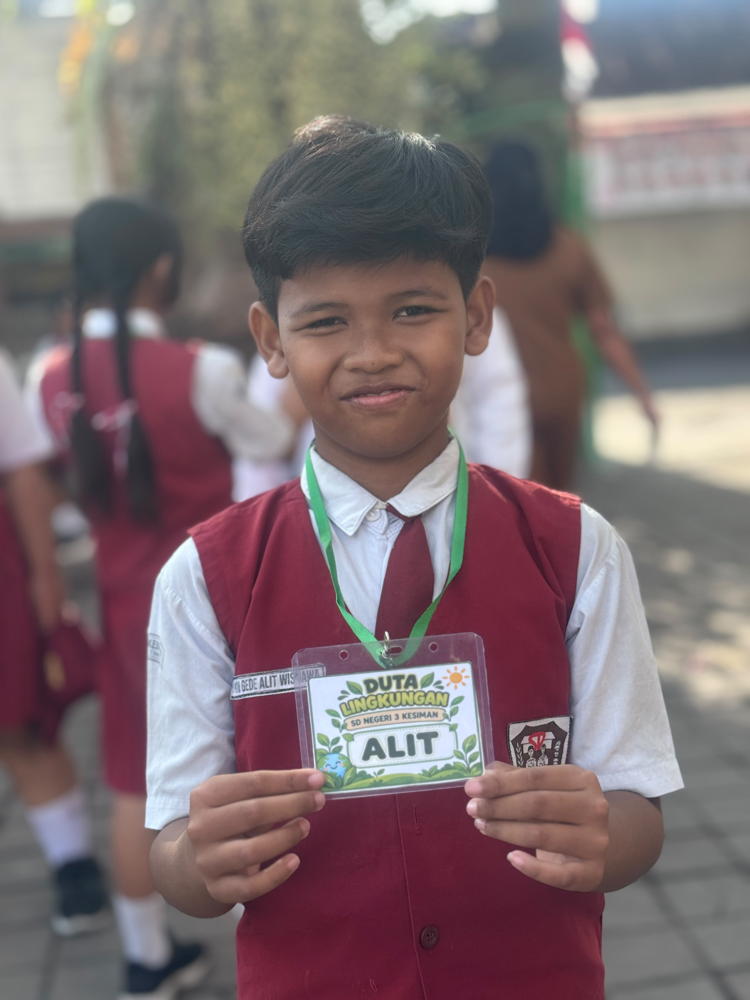

Semangat inilah yang tumbuh melalui Program Duta Lingkungan SD Negeri 3 Kesiman. Dibentuk pada Agustus 2026, program ini melibatkan 20 siswa kelas IV, V, dan VI yang mendapat kesempatan untuk menjadi teladan sekaligus penggerak budaya peduli lingkungan di sekolah.
Program Duta Lingkungan merupakan salah satu tindak lanjut kolaborasi antara PPLH Bali dan SD Negeri 3 Kesiman dalam membangun kepedulian dan kebiasaan menjaga lingkungan. Pengetahuan yang diperoleh siswa tidak berhenti sebagai materi pembelajaran, tetapi diwujudkan melalui aksi nyata dalam kehidupan sehari-hari.

Bukan Sekadar Gelar, tetapi Sebuah Peran
Menjadi Duta Lingkungan bukan sekadar mengenakan identitas atau mendapatkan sebuah gelar. Para siswa belajar untuk memberikan contoh, mengajak teman, serta membangun kebiasaan baik bersama.
Melalui peran ini, mereka belajar bahwa menjaga lingkungan merupakan tanggung jawab setiap warga sekolah. Perubahan tidak harus selalu dimulai dengan kegiatan besar. Tindakan sederhana yang dilakukan secara konsisten justru dapat menjadi kebiasaan yang membawa perubahan.
“Dari langkah kecil, tumbuh kebiasaan. Dari kebiasaan, lahir perubahan.”
Empat Aksi untuk Lingkungan
Untuk mewujudkan semangat tersebut, Duta Lingkungan menjalankan empat program utama.
AKAR (Aksi Kecil Anak Rawat Alam) menjadi kegiatan rutin mingguan untuk merawat tanaman dan mengecek kondisi tanaman di lingkungan sekolah. Melalui kegiatan ini, siswa belajar bahwa lingkungan yang hijau membutuhkan perhatian dan perawatan bersama.
Melalui Polisi Hijau, Duta Lingkungan melakukan observasi kebersihan sekolah secara bergiliran setiap hari. Mereka tidak hanya mengamati kondisi lingkungan, tetapi juga belajar mengingatkan teman dengan santun serta memberikan contoh yang baik.
Program SEHATI (Sehat Hari Ini, Ceria Setiap Hari) mengajak siswa memahami bahwa kepedulian terhadap lingkungan juga berkaitan dengan kebiasaan hidup sehat. Melalui kegiatan bulanan ini, siswa diajak memilih dan mengonsumsi makanan yang sehat, bergizi, dan seimbang.
Sementara itu, ECO DHARMA mengajak siswa bertanggung jawab terhadap sisa sampah setelah kegiatan persembahyangan. Sampah dipilah dan dikelola sesuai jenisnya, termasuk mengarahkan sampah organik menuju teba modern.






Belajar Menjadi Penggerak
Perjalanan menjadi Duta Lingkungan tentu tidak berhenti pada empat program tersebut. Para siswa juga terlibat dalam kampanye dan edukasi lingkungan melalui presentasi dan kegiatan berbagi, mengikuti Jumat Bersih, serta mendapatkan pelatihan dan pembekalan untuk memperluas pengetahuan mereka.
Dari berbagai kegiatan tersebut, siswa tidak hanya belajar tentang lingkungan. Mereka juga belajar tentang kepemimpinan, tanggung jawab, kerja sama, kedisiplinan, kepedulian, serta keberanian untuk menyampaikan hal-hal baik kepada teman-temannya.
Perubahan kebiasaan tentu membutuhkan proses. Tantangan terbesar adalah menjaga konsistensi dan menumbuhkan kesadaran seluruh warga sekolah. Karena itu, Duta Lingkungan hadir bukan sebagai “petugas kebersihan”, melainkan sebagai teman yang mengajak, mengingatkan, dan memberi contoh.
Dari 20 Siswa untuk Seluruh Warga Sekolah
Keberadaan Duta Lingkungan mulai mendukung berbagai program lingkungan di SD Negeri 3 Kesiman. Berkurangnya volume sampah, tumbuhnya rasa tanggung jawab terhadap kebersihan, serta semakin banyaknya siswa yang ikut menjaga lingkungan menjadi bagian dari perubahan yang mulai terlihat.
Namun, tujuan terbesar program ini bukan hanya menciptakan sekolah yang lebih bersih. Lebih dari itu, sekolah ingin menumbuhkan generasi yang memahami bahwa bumi yang sehat dimulai dari kebiasaan kecil yang dilakukan hari ini.
Dua puluh Duta Lingkungan mungkin menjadi penggeraknya, tetapi perubahan sesungguhnya terjadi ketika seluruh warga sekolah ikut bergerak.